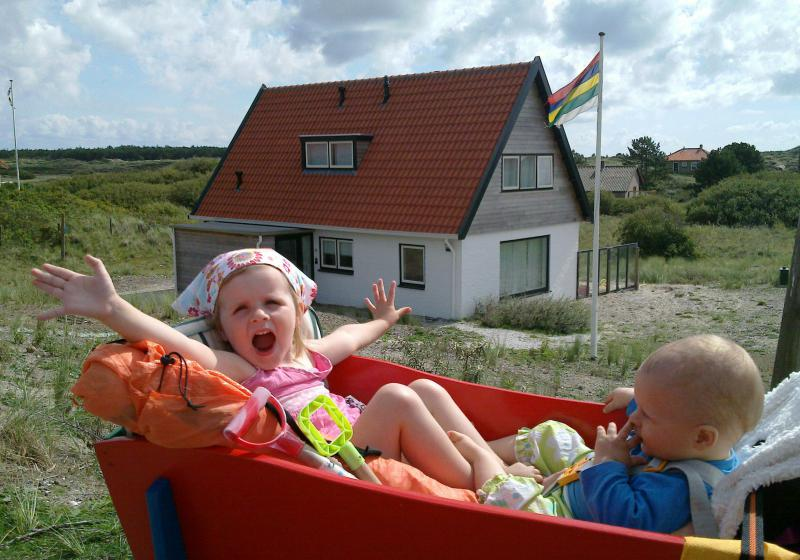

Drie stoten van de hoorn. De boegschroef gaan aan. De hele boot trilt. De vakantie is
afgelopen. Zwaai nog maar een keer naar de Brandaris. Want we zijn weer onderweg naar
huis.
En wat hebben we weer twee ontzettende lekkere weken gehad op Terschelling. Af en toe
kwamen berichten bij ons aan dat half Nederland was ondergelopen. En dat wij dan elkaar
aankeken van: ‘maar het is toch prachtig weer? Wij zijn toch de hele dag buiten
geweest?’ Is het dan echt waar, dat het op Terschelling altijd mooi weer is. Of
lijkt dat maar zo. In ieder geval hebben we weer heel veel Terschelling verkend.
Banjeren door de duinen achter het konijnehol. Een heel lange wandeling langs de meest
Oostelijke Eendekooien. Prachtig stukje Terschelling.
Hanna en Jitze hebben zich ook prima vermaakt. Spannende dingen zien in het wrakkenmuseum. Wandelen op hte strand. Zandkastelen maken. En dat Hanna dan de allerlaatste dag toch ineens de geest krijgt en toch die grote enge zee in durft te lopen. Lekker eten en drinken in de strandtenten. Lekker fietsen met Hanna en Jitze in de fietskar.
En dan ‘s avonds moe weer thuiskomen in een echt schitterend verbouwd Konijnehol.
Groetjes,
Johannes, Antine, Hanna en Jitze.
Posted: October 8, 2010 8:24 am